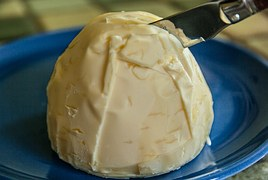

Boerenkool
Ingredienten voor 4 personen
-1 kilo panklare boerenkool
-1750 gram aardappelen
-150 gram rookspek in stukjes
-scheut melk
-150 gram boter
-zout
bereidingswijze
Doe de aard. in een pan en zet ze haast onder water,
boerenkool erbovenop en ongeveer 20 min. koken totdat de aard.
gaar zijn. Bak ondertussen de spekjes uit (niet al hard),
zet de melk en de boter op een laag vuur zodat de boter smelt
en kook de rookworst. Als de aard. gaar zijn de pan afgieten en met
een scheut melk en de boter stampen totdat je het smeuig genoeg vindt.
Spekjes en zout naar smaak erdoor roeren.
